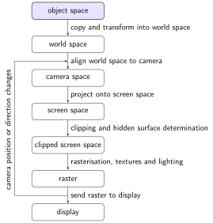
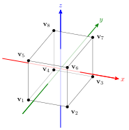
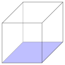
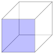
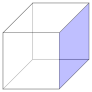
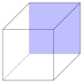
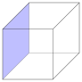
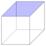
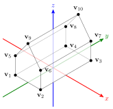
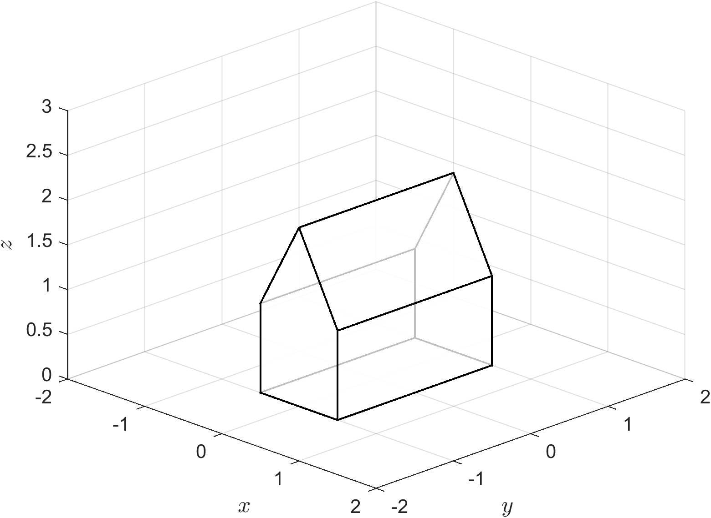

Object space
Contents
Object space#

Each object in a virtual world is defined in its own space where the centre of mass of the object is at the origin so that scaling, translation and rotation operations can be easily applied.
A three-dimensional object is constructed using polygons for the faces of the object where each face is defined by its vertices. Since multiple faces of on object can share the same vertex we use one array to list the vertex co-ordinates and another array to list the vertices that defines each face.
{kind=link}

Fig. 48 Vertex labeling for a unit cube object.#
Consider the diagram in Fig. 48 that shows a cube centred at the origin with side lengths of 2 which are parallel to the co-ordinates axes (called a unit cube). The eight vertices have been labeled \(\mathbf{v}_1, \mathbf{v}_2, \ldots, \mathbf{v}_8\). The homogeneous co-ordinates of the vertices are
We can form a single matrix containing these vertices known as the vertex matrix
The faces of the object are defined by a face matrix that links to the vertex matrix. The face matrix is an \(m \times n\) matrix where \(m\) is the number of faces of the object and \(n\) is the number of sides for each face, so for the cube object the face matrix will be \(6 \times 4\). The rows of the face matrix contain the column number of the vertex matrix corresponding to vertices of that face. For example, consider the faces of the cube object shown below. The face that represents the base has vertices \(\mathbf{v}_1\), \(\mathbf{v}_2\), \(\mathbf{v}_3\) and \(\mathbf{v}_4\) so the row of the face matrix will contain the numbers 1, 2, 3 and 4.

base face

front face

right face

back face

left face

top face
We also need to consider the order that the vertices are listed for each face. Objects are defined so that the normal vectors for each face is pointing away from the centre of the object. We have seen that the normal vector to a plane that passes through the 3 points with position vectors \(\mathbf{v}_1\), \(\mathbf{v}_2\) and \(\mathbf{v}_3\) is calculated using
If \(\mathbf{v}_1\), \(\mathbf{v}_2\) and \(\mathbf{v}_3\) are ordered anti-clockwise when viewed from one side of the plane then the above equation will result in a normal vector pointing towards the viewer (Fig. 49). Alternatively is the vertices are ordered clockwise when viewed from the side fo the plane then this will result in a normal vector pointing away from the viewer (Fig. 50).
With this in mind the face matrix for the cube object is
Note that it does not matter which order the vertices are listing as columns in the world space vertex matrix or the faces listed in rows of the face matrix, as long as the face matrix correctly links to the vertex matrix.
Example 29
A simple three-dimensional object that resembles a house is shown below (modelled on the house piece from the Monopoly board game)
{kind=link}

The house has length of 2, width of 1, wall height 1 and roof height 2 and defined so that the center of the base is at the origin. Define the vertex and face matrices for this house object.
Solution
The homogeneous co-ordinates of the vertices \(\mathbf{v}_1\) to \(\mathbf{v}_{10}\) are
so the vertex matrix is
The house object has 7 faces: a base, 2 end walls, 2 side walls and 2 roofs. The base, side walls and roofs are 4-sided faces whereas the end walls are 5-sided faces. The face matrix for the house object that ensures the normal vectors are point away from the centre of the object is (vertices are listed in an anti-clockwise direction when looking towards the centre). Note that the last vertex of the 4-sided faces are repeated to ensure that each row of the face matrix has 5 elements.
MATLAB code#
The following MATLAB code in defines the vertex and face matrices for the house object from Example 29 and plots the object space. The vertex and face matrices are defined in V and F and the patch() command is then used to plot the object. Note that we only use the first three rows of the V array which has been transposed because MATLAB assumes the co-ordinates are listed as rows in V. The FaceAlpha is set to 0.75 so that the faces of the object are semi-transparent.
# Define object
V = [-0.5, 0.5, 0.5, -0.5, -0.5, 0.5, 0.5, -0.5, 0, 0 ;
-1, -1, 1, 1, -1, -1, 1, 1, -1, 1 ;
0, 0, 0, 0, 1, 1, 1, 1, 2, 2 ;
1, 1, 1, 1, 1, 1, 1, 1, 1, 1];
F = [4, 3, 2, 1, 1 ; # base
1, 2, 6, 9, 5 ; # front wall
2, 3, 7, 6, 6 ; # right wall
3, 4, 8, 10, 7 ; # back wall
1, 5, 8, 4, 4 ; # left wall
6, 7, 10, 9, 9 ; # right roof
5, 9, 10, 8, 8 ]; # left roof
# Plot object
patch('Vertices', V(1:3,:)', 'Faces', F, FaceColor='white', FaceAlpha=0.75, LineWidth=2)
xlabel('$x$', 'Interpreter', 'latex', 'FontSize', 18)
ylabel('$y$', 'Interpreter', 'latex', 'FontSize', 18)
zlabel('$z$', 'Interpreter', 'latex', 'FontSize', 18)
view(45, 30)
axis equal
axis([-2, 2, -2, 2, 0, 2])
grid on
{kind=link}

Fig. 51 The object space from Example 29.#